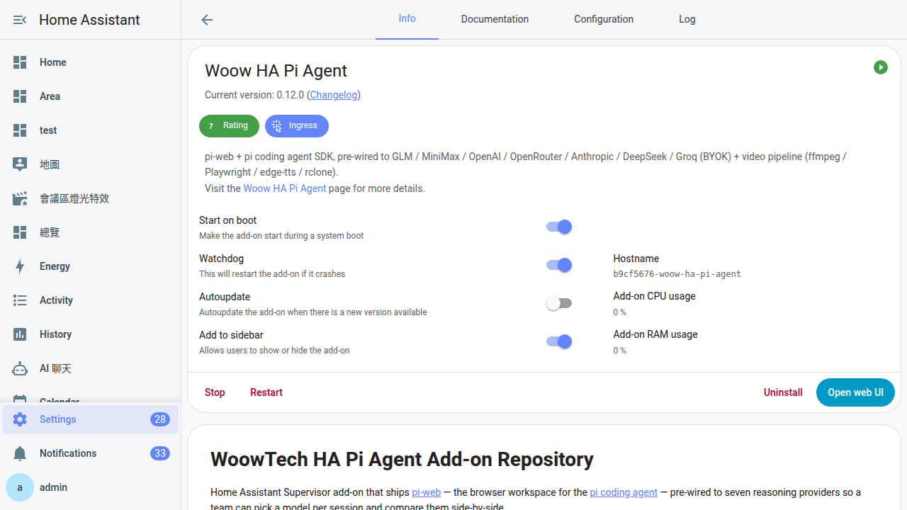

裝好 Pi Agent
從「加倉庫」到側欄按鈕跳出來，其實就七個動作。真正麻煩的是首次啟動那 3-8 分鐘的沉默——這章會告訴你螢幕看起來像當掉的時候，機器裡到底在做什麼。
為什麼要專門開一章教「裝」
裝一個 Home Assistant 官方 add-on，通常就是搜尋、按安裝、按啟動——三步結束。可是 Pi Agent 不太一樣，開這章是因為新手在下面三個地方常常踩坑，之後在 Discord 問一模一樣的問題：
- 它不在官方商店裡。Pi Agent 是 Woow 自家在 GitHub 上維護的第三方 add-on，你要先手動「加倉庫（Add repository）」告訴 HA 去哪裡撈——就像叫外送要先把餐廳加進 App，不會憑空冒出來。
- 首次啟動要 3-8 分鐘才好。按了「啟動」以後，看起來像當機，其實它正在下載一整套約 720 MB 的影片管線工具（Playwright 瀏覽器、edge-tts、Python 虛擬環境）。很多人就是這時候手癢按了「停止」，結果卡在半殘狀態。
- v0.13.0 之後 API 金鑰搬家了。以前 AI 金鑰是在 add-on 的 Configuration 頁貼，現在改到 pi-web 網頁裡面的 Models 面板。舊教學截圖還在網路流傳，跟著做會找不到欄位。
概念：Home Assistant 的「加倉庫」是什麼意思
把 HA 想像成你家旁邊那條街：
- 官方 Add-on Store（商店）就是「便利商店」——只賣經過 HA 官方核准的東西，架上永遠是那幾家。
- 加倉庫（Add repository）就是你自己去問一家「非官方架子」的商家，跟他要一張進貨清單，貼進 HA 說「以後這家的貨也算數」。
- 加完之後，Woow 家（還有你未來自己加的其他家）的 add-on 就會跟便利商店的商品混在同一個商店頁面裡，一起搜尋、一起安裝。
技術上，這個「進貨清單」就是一個 GitHub 網址，HA Supervisor 會定期去那邊撈 repository.yaml、config.yaml、Docker 映像檔位址等資訊。你只要做一次，之後 Woow 家出新 add-on 或有更新，HA 都會自己同步。
概念：這個 add-on 裝完你會拿到什麼
Pi Agent 不是只有一個 UI，它其實是一整套打包在一起的東西，都塞進同一個 add-on——這是為什麼下載會比較久。它的內容物大概是：
- pi-web 工作區：一個瀏覽器版的「AI 助理視窗」，跑在 Node.js 22 上面。這是你之後每天會看到的畫面。
- pi coding-agent SDK：真正跟 AI 對話、幫你寫程式碼、跑技能的引擎，跟 pi-web 綁在同一個行程裡。
- nginx（反向代理，Reverse Proxy）：夾在 HA 跟 pi-web 中間做網址翻譯，這樣 pi-web 才能跑在 HA 側欄裡而不會壞掉。
- 影片管線工具（video-tools）：Playwright（無頭瀏覽器）+ edge-tts（微軟語音合成）+ ffmpeg + rclone，用來做第 18 章的自動剪片。這一坨就是首次啟動要等 3-8 分鐘的元凶。
- s6-overlay（服務監控）：確保上面幾支程式該啟動的先啟動、掛掉會自動重跑。
好處是「一鍵到位」，不用你另外裝 Node、Python、ffmpeg 各自打架；代價就是第一次下載比較大隻。之後就不用再下載了。
開工前：三個必備條件
在按任何按鈕之前，先花兩分鐘確認下面三件事，可以省掉之後一堆繞路。
| 條件 | 為什麼要 | 怎麼確認 |
|---|---|---|
| HA 是 OS 版或 Supervised 版 | 只有這兩種安裝方式帶 Supervisor，才有 add-on 商店可用。Container 版跟 Core 版沒有。 | 設定 → 系統 → 修復 → 系統資訊，看「Installation Type」 |
| 系統可用空間 ≥ 3 GB（建議值） | 映像檔本身約 300 MB（CHANGELOG v0.11.0 明列），首次啟動再下載 720 MB（README 數字）到 /data/pi-agent/，硬扣約 1 GB；抓 3 GB 是加上暫存、log、後續 Chromium 快取與 HA snapshot 的餘裕，不是官方硬性下限。 |
設定 → 系統 → 儲存空間 |
| 網路能對外連 | 要下載 GHCR 上的映像檔，還有第一次啟動時的 Playwright / edge-tts。 | 能用手機 4G 連你家 HA 就代表能出去；或者裝任何一個官方 add-on 試試 |
Home Assistant OS、Supervised、Container、Core 其中一個。前兩個可以往下走，後兩個這本書幫不了你。
https://ghcr.io 應該要看到一個空白頁而不是 timeout。
動手：從加倉庫到看到側欄按鈕
照順序做，一步一步來。整個過程在網路正常的樹莓派上大概 4-6 分鐘（含下載），x86 小主機或 NUC 大概 1-2 分鐘。
-
打開設定 → 附加元件（Add-ons）
Home Assistant 官方文件與 Woow HA Pi Agent 的 README 到 2026-08 為止都仍稱為「Add-ons（附加元件）」。網路上偶爾看到有人叫它「Apps」是社群內部提案的暱稱，官方 UI 目前沒有正式改名，看到的字樣就是「Add-ons / 附加元件」。
-
進入 Add-on Store → 按右上角三點選單 → 儲存庫（Repositories）
會跳出一個對話框「管理附加元件儲存庫」，裡面已經有 HA 官方的幾個預設倉庫。
-
把下面這串網址貼進去，按「加入（ADD）」
https://github.com/WOOWTECH/Woow_ha_pi_agent_add_on
貼完稍等 3-10 秒，HA 會去 GitHub 抓
repository.yaml。成功的話，倉庫清單會多一行「Woow HA Pi Agent Add-on」；失敗的話，按鈕會震一下、跳紅字，這時候先檢查網址有沒有多空白。 -
關掉對話框，回到 Add-on Store，往下捲
會看到一個新的品牌區塊「Woow HA Pi Agent Add-on」，裡面就一個 tile：Woow HA Pi Agent。點它。
-
按「安裝（INSTALL）」，等映像檔下載
下方會出現進度條。這個階段在下載的是「映像檔本體」，大約 300 MB。時間參考：
- 樹莓派 4 / 5 + 100 Mbps 家用網路：3-5 分鐘
- x86 小主機（Intel N100 / NUC 等）+ 500 Mbps：30 秒-1 分鐘
- 樹莓派 3 + 50 Mbps：5-8 分鐘
-
不要急著按「啟動」——先把三個開關打開
下載完會跳到 Info 分頁，你會看到三個開關（都在頁面右邊）：
- 啟動時自動啟動（Start on boot）：HA 重開機時要不要順便帶起 Pi Agent。打開。
- 看門狗（Watchdog）：如果 pi-web 當掉，Supervisor 會自動重啟它。打開。
- 顯示在側欄（Show in sidebar）：預設會自動打開（v0.8.0 之後），但如果沒亮，手動把它打開。
為什麼要先開再啟動？因為「顯示在側欄」如果啟動之後才打開，有時候要按一下 HA 重新整理才會出現按鈕，多繞一步。 -
按「啟動（START）」
頁面上方會轉圈圈，大約 5-15 秒之後轉圈停止，狀態變成「已啟動」。這時候側欄應該會在 10 秒內出現一個機器人圖示「Pi Agent」（只有 admin 使用者看得到，README 官方時間就是 ~10 s；如果超過 30 秒還沒亮，見下方疑難排解）。

首次啟動要等 3-8 分鐘的真相
看到「已啟動」不代表「已經好」。這時候你如果馬上點側欄按鈕進去，很可能會看到白畫面、載入圈圈、或者「connection refused」的錯誤。這是正常的。
因為 pi-web 已經開起來了沒錯，但同時間背景還有另一個 s6 服務叫 video-tools-init，它正在做這幾件事（依 CHANGELOG v0.11.0 的順序，秒數為實測估算——官方 README 只給總時間「約 720 MB」）：
- 建立 Python 虛擬環境（venv）——估算 ~20 秒
pip installplaywright、edge-tts、pyyaml、mutagen——估算 30-90 秒（看網路 + 樹莓派 CPU）- 透過 Playwright 下載並解壓 Chromium 瀏覽器（最大宗，佔絕大部分下載量）——估算 2-6 分鐘
- 寫入完成標記
/data/pi-agent/.video-tools-installed
整包加起來大概 720 MB（這是 README 明寫的數字），樹莓派 3-8 分鐘、x86 通常 1-2 分鐘就好。之後就不用再下載了——完成標記檔案存在，下次開機這個 init 服務會 <100ms 內直接結束（CHANGELOG v0.11.0 原話）。這是為第 18 章的影片管線做準備。
video-tools-init 的 s6 oneshot 裡，你沒辦法選擇性關掉。但反過來想，反正只下載一次，之後就是背景一個檔案佔硬碟而已；哪天想玩影片管線隨時都可以。細節看 ch18。
看記錄檔確認一切正常
在 add-on 的 Info 分頁上方切到「記錄檔（Logs）」分頁，會看到黑底綠字（或黑底白字，看你的主題）的一堆訊息。找下面這幾個關鍵字，就能判斷跑到哪：
| 你看到的訊息 | 意思 | 該不該擔心 |
|---|---|---|
Starting video-tools-init |
影片工具剛開始下載，正常 | 不用 |
Downloading Chromium ... |
正在抓 Chromium 瀏覽器（720 MB 下載中最大的一塊） | 耐心等，網路慢就慢 |
video-tools-init done |
影片工具全部裝好了 | 不用，好消息 |
Home page ready 或類似 ready on http://0.0.0.0:30141 |
pi-web 網頁準備好接客 | 不用，可以進去玩了 |
Downloading Chromium ... 十分鐘沒進度 |
網路撈不到 Playwright CDN | 要處理，看下面的疑難排解 |
紅字 ERROR / FATAL |
認真出事了 | 要處理，把整段 log 存下來對照疑難排解 |
這章做完之後，下一步做什麼
假設一切順利，你現在的狀態是：
- HA 側欄出現「Pi Agent」按鈕（機器人圖示）
- Add-on 頁面顯示綠色的「已啟動」
- 記錄檔裡看得到
video-tools-init done
那接下來的建議路徑：
- 第 3 章：第一次打開 Pi Agent——教你點進去看到什麼、怎麼認畫面上各區塊。
- 第 5 章：拿到第一支 AI 金鑰——教你去哪申請一組 GLM 或 OpenRouter 的 key（有免費額度）。
- 第 6 章：把金鑰貼進 Pi Agent——教你在 Models 面板加 provider、貼 key、按 Test 驗證。
401 unauthorized 或者「請先在 Models 面板加入 provider」。這不是裝壞了，是預期行為——v0.13.0 之後 add-on 本身不再預設任何 provider，你必須自己加。細節看 ch5。
疑難排解：新手最常撞的 6 個坑
症狀：貼倉庫 URL 之後按「加入」，按鈕震一下、跳紅字「無法連接儲存庫」
可能原因跟解法（依機率排序）：
- URL 前後有多空白或多字元。回去對照這個乾淨版本：
https://github.com/WOOWTECH/Woow_ha_pi_agent_add_on——注意結尾沒有斜線/、沒有.git。 - 你的 HA 是 Container 版或 Core 版——這兩種沒有 Supervisor，也就沒有 add-on 商店。這本書幫不了，需要換成 OS 或 Supervised 版本。
- 網路連不到 GitHub。用手機開個網頁貼上 URL 看能不能開；如果連手機也開不了 GitHub，那就是你家網路的問題。
- 公司/學校/某些國家的防火牆擋掉 GitHub API。這種情況要透過 HA 的 http/https_proxy 環境變數繞出去，比較複雜，先跟你們網管講。
症狀：倉庫加成功了，但商店裡搜尋「pi agent」或往下捲都找不到 Woow HA Pi Agent
解法（依機率排序）：
- 按一下三點選單 → 重新載入（Reload）強制 Supervisor 重新抓一次倉庫索引。
- 清一下瀏覽器快取（Ctrl+Shift+R 或無痕視窗開一次 HA），有時候是舊快取讓商店頁沒更新。
- 去 Repositories 對話框確認你剛剛貼的倉庫還在清單裡，沒有被自己刪掉。
- 捲到最下面看看是不是被歸到「Woow HA Pi Agent Add-on」品牌區塊底下——第三方倉庫不會混在官方那一區，是獨立一個小標題。
症狀：按下「安裝」之後，進度條一直卡在某個百分比，或跳「pull failed」
幾乎都是 Docker Hub / GHCR 網路慢或短暫抽風：
- 先看記錄檔（Info → Logs 上方會有安裝 log），如果訊息是
connection timed out或i/o timeout，就是網路的問題。 - 等 5 分鐘再按一次「安裝」，通常這時候 CDN 已經恢復。
- 如果你在中國大陸/伊朗這類 ghcr.io 被牆的地方，需要走 proxy 或 mirror，這超出本書範圍。
- 硬碟真的不夠——回去看設定 → 系統 → 儲存空間，可用要 > 3 GB。不夠就先刪備份跟舊 add-on。
症狀：裝完按啟動了，但是側欄一直沒有 Pi Agent 按鈕
三個檢查點：
- 回到 Info 分頁，確認「顯示在側欄（Show in sidebar）」開關是打開的。v0.8.0 之後這是自動打開，但慢的機器偶爾會漏。
- 按一下瀏覽器的重新整理（Ctrl+R），HA 側欄不會即時更新，要重新整理才會拿到新的側欄項目。
- 檢查你登入的 HA 帳號是不是管理員——Pi Agent 側欄設定為
panel_admin: true，非 admin 帳號看不到，這是設計上的權限保護。
症狀：記錄檔一直卡在 Downloading Chromium ... 超過 15 分鐘
Playwright 的 Chromium 是從 playwright.download.prss.microsoft.com 抓的，這個 CDN 在某些地區真的很慢。
- 先給它再等 10 分鐘——樹莓派 3 + 慢網路真的可以跑到 20 分鐘。
- 還是不動的話，把 add-on 停掉，再啟動，通常會重試。
- 如果一直失敗，pi-web 本身還是能用（video-tools-init 的失敗是非致命的），你可以先跳過影片章節。之後想重試，看 ch18 的
reset_video_tools開關。
症狀：升級 add-on 之後，本來裝好的 skills 或工作目錄不見了
v0.10.0 之後這個問題已經修好——所有工作目錄都放在 /data/pi-agent/home/ 這個持久儲存區。
- 如果你是從 v0.9.1 或更早版本升上來，之前的
pi-cwd-*工作目錄是在容器根目錄，升級時會被砍掉。要重建。 - 如果你現在的版本 ≥ v0.10.0 還是遇到這問題，去看 add-on 記錄檔有沒有
chown或permission denied，並到 Woow 倉庫開 issue。
常見問題
一定要用 WOOWTECH 這個 fork 嗎？不能自己包 pi-web？
技術上可以，但強烈不建議。Woow 這個 add-on 塞進去的不是單純 pi-web，還包了 nginx 前端做 HA Ingress 的 URL 重寫（大概 40+ 條規則）、s6-overlay 服務監控、影片管線工具、還有側欄自動註冊等等。上游 pi-web 沒有這些東西，自己包等於要重造這一輪基礎建設，而且每次 pi-web 出新版還要重新驗證那 40 條規則會不會爆。除非你想當 add-on 維護者，不然用 Woow 這個就是最省事的路。
HAOS 硬碟不夠怎麼辦？我只有 8 GB 的 SD 卡。
先誠實說：8 GB 跑 HAOS + Pi Agent + 影片管線非常勉強。建議路線：
- 短期救急：先清舊備份（設定 → 系統 → 備份），一份至少 500 MB。刪暫時用不到的 add-on。
- 長期：升級到 32 GB 或 64 GB 的高速 SD 卡（A2 級以上），或直接用 USB SSD。HAOS 的
ha os import或者用官方 Raspberry Pi Imager 重灌都可以。 - 影片管線如果真的用不到，還是會下載一次（沒辦法選擇性關）。裝完之後你可以看 ch18 學怎麼用
reset_video_tools定期清舊快取。
之前裝過舊版本（v0.12 以前），現在升到 v0.13.x 要不要重灌？
不用重灌，直接升就好。但要記得手動搬金鑰：v0.13.0 是個 breaking change，把 7 個 API 金鑰欄位（GLM、MiniMax、OpenAI、OpenRouter、Anthropic、DeepSeek、Groq）從 add-on 的 Configuration 頁移到 pi-web 網頁裡面的 Models 面板。升級之後你的舊金鑰會被 HA 丟掉（因為 schema 沒有那些欄位了），每次對話會回 401。到 pi-web 的 Models 面板重新貼一次就好，工作階段（sessions）跟已安裝的 skills 都會保留。詳細金鑰貼法看 ch5。
可以在多台 HA 上同時裝 Pi Agent 嗎？金鑰要怎麼共用？
可以裝在多台，每台都是獨立的 add-on 實例，各自的 /data/pi-agent/ 目錄跟 models.json。金鑰目前沒有官方的雲端同步機制，你要在每台的 Models 面板各自貼一次。實務上大部分人只有一台 HA，這問題不太會遇到；如果你真的有多台（例如公司一台、家裡一台），可以：
- 做一次 HA snapshot backup，然後 restore 到另一台——
/data/pi-agent/會整個帶過去，包含金鑰。細節看 ch20。 - 或者用一個 provider（例如 OpenRouter）的一支 key 給多台用，不同 HA 都貼同一支。用量會合併計費。
安裝之後我可以改 add-on 的 Configuration 嗎？改什麼會影響什麼？
v0.13.0 之後 Configuration 只剩四個容器層面的設定，都是安全的：
log_level：info是預設，除錯的時候切debug。timezone：IANA 名字例如Asia/Taipei，會影響 log 時間戳跟未來影片字幕的時間軸。reset_video_tools：一次性開關，打開之後重啟 add-on 會重下 720 MB 影片工具，然後自動關回 false。影片管線壞掉時的救命開關。env_vars：進階逃生口，可以塞任意環境變數給 pi-web。一般人不會用到，除非要設 proxy 或改 provider base URL。
完整欄位對照看 附錄 A · Configuration 完整對照。
裝完之後 add-on 會自動更新嗎？我需要每個月手動檢查嗎？
HA Supervisor 每隔一段時間會自動去你加的所有倉庫檢查有沒有新版，發現有就會在 add-on 頁面出現「Update to X.Y.Z」按鈕。不會自動裝——按了才會裝。這是刻意的，因為升級偶爾會有 breaking change（例如 v0.13.0），Woow 團隊會在 CHANGELOG 寫清楚要不要做什麼手動動作。升級流程跟注意事項統一看 ch21。